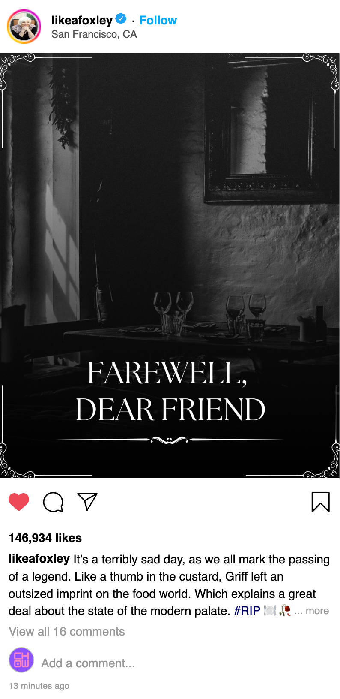

Celebrity Chef Griff Gumbell Dies in Front of Live Studio Audience
Chowmap exclusive! Fire, blood, panic erupt as star-studded "World Eaters" event turns deadly in San Francisco.
Polarizing food media mogul Griff Gumbell—founder of both The Clever Kitchen and World Eaters—has died after a shocking incident during a gala event in San Francisco, Chowmap has learned. He was 70.
Gumbell’s longtime publicist, Libby Winslow, announced the tragic news early this morning via prepared statement. According to sources close to the family, Gumbell was found unresponsive onstage at S.F.'s Golden Lyceum Theatre during a live-streamed anniversary special. Emergency personnel pronounced him dead on the scene.
A fire also broke out during the event, but it’s reported that firefighters were able to get the blaze under control quickly. It is not known what role the fire played in Gumbell’s death. Despite the chaos of the event, with several attendees seeking medical treatment for smoke inhalation and minor injuries, no other casualties have been reported.
What caused Gumbell’s death is still unclear. He appears to have collapsed during a cooking segment.
Witnesses at the venue describe a scene of total pandemonium. Videos and other posts uploaded to social media from the crime scene offer conflicting reports. Some say the fire started onstage during a demo of his legendary “Not My Mother’s Turkey” recipe. Multiple spectators mentioned sounds of gunfire, while others cite equipment malfunction. Even more troubling reports indicate visible blood splatters on the stage.
One alleged attendee took to TikTok to describe the carnage, referencing a strange “sickly-sweet” odor that filled the auditorium. On the "Griff's Gals" Facebook group, Gumbell fan Patricia Crenshaw posted: "It smelled like kālua pork, but also a touch like death. I don't think I can ever eat barbecue again." These alarming firsthand testimonies have set off a wave of online speculation about everything from gas leaks to some kind of chemical attack. Authorities could not be reached for comment to confirm any such theories.
Remembering Griff Gumbell: The Man Who Built the Brand
Gumbell had been a giant in food media for decades. The celebrated chef, publisher, and TV personality famously built his culinary empire from scratch.
His meteoric rise began in Newton, Mass., in the 1980s with C’Est Bon, a small gastronomy newsletter Gumbell assembled by hand in his garage with help from his first wife, Margot Halvorsen. (Halvorsen’s own publishing career was brief; today, she is known as a distinguished archaeologist specializing in paleoethnobotany.) Soon after launching C’Est Bon, Gumbell’s refreshingly no-nonsense approach to New American cuisine found its audience—and the company quickly outgrew his suburban garage. This appetite for elevated home cooking eventually spawned The Clever Kitchen, the hugely successful brand that cemented Gumbell as a household name among serious foodies. Over time, his Boston-based empire spanned multiple magazines, television shows, cookbooks, and even specialty cookware—all of it driven by his famously obsessive test kitchen.
But Gumbell’s career also came with drama. The year 2013 marked an acrimonious split from both his investors and his second wife, Joanna Carmichael (great-granddaughter of prominent Boston Brahmin investment banker Elias Carmichael), who reportedly held a major financial stake in the business. Soon after this personal and professional breakup, Gumbell married longtime executive assistant Sylvie Gumbell (née Rocca), fueling rumors about a possible workplace affair behind the scenes.
In 2017, Griff and Sylvie Gumbell launched World Eaters—a globe-trotting reboot of the old formula and a self-professed labor of love for the newly wed couple. Despite skepticism from fans and investors alike, World Eaters made a splash in its first year by winning a James Beard Award for its in-depth reporting on plov, a meaty rice pilaf that is the national dish of Uzbekistan.
But despite that promising start, World Eaters’ future has looked increasingly uncertain. Insiders say the company has been struggling amid growing internal turmoil and hemorrhaging subscribers. For years, it was also dogged by a protracted legal battle with The Clever Kitchen, who sued Gumbell on the basis that his new company directly pilfered TCK intellectual property, though the lawsuit was settled in August 2019, just weeks before the announcement of the live show.
A Career Capstone Ends in Tragedy
“Griff Gumbell: Live from San Francisco!” was positioned as a major brand event—a flashy career retrospective built around Gumbell’s legacy, complete with a star-studded guest list.
Cameos included Nigella Lawson, Marcus Samuelsson, and Dave Portnoy. (Before the night turned deadly, attendees say one of the weirder moments involved Portnoy force-feeding Gumbell a slice of Hawaiian pizza onstage while screaming “You know the rules!”)
The event even featured a surprise appearance by Sheba Foxley, Gumbell’s longtime media rival, often referred to as “Connecticut’s Grande Dame of Tasteful Living.” A high point of the evening, Foxley’s unexpected entrance was marked by wild applause from a delighted audience. As Foxley cracked both farm-fresh eggs and raunchy jokes while helping Griff prepare an startlingly purple ube souffle onstage, the two foodie foes appeared to finally have buried the hatchet in their decades-long food fight.
Whether this truce would have lasted, we will never know. But Foxley came out in support of Gumbell upon learning of his passing. As firefighters were still extinguishing the blaze, Foxley posted the first celebrity tribute on Instagram:

What Happens Now?
Authorities have not said whether foul play is suspected in Gumbell’s death, which is subject to ongoing investigation.
Gumbell is survived by his wife, Sylvie, 43, and his three children: Zuni Gumbell, 30; Chad Gumbell, 28; and Otto Gumbell, 5.
Tributes are already pouring in from fans, celebrity chefs, and the media, expressing shock and conveying their condolences to his family. Among them, this note from publicist Libby Winslow: “Griff was a singular force in food media, and his absence will be deeply felt across the industry. Though his death raises many questions, there is one thing we can be sure of: There will never be another Griff Gumbell. Ever.”
This is a developing story. Refresh chowmapnyc.com for updates. Got footage of Dave Portnoy tormenting Griff Gumbell? Email tips@chowmapnyc.com.
146 Comments
I am completely devastated. This man was an idol to me. Never made his recipes but I watched the show religiously. When I was really deep in my depression I used to binge watch his show and it helped keep me company. He was like the fun cranky uncle I never had. I cant believe it, such a terrible loss
Slow news day? Last I checked, this site was called "ChowmapNYC," not "ChowmapEverywhere." Boston chef dies in SF? Not my problem. Get a life, guys.
hey!!!! that was my tiktok post abt the weird smell! arent u gnna credit me????